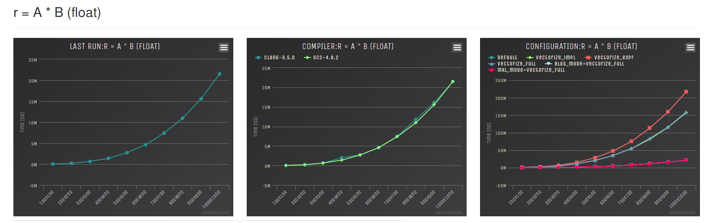
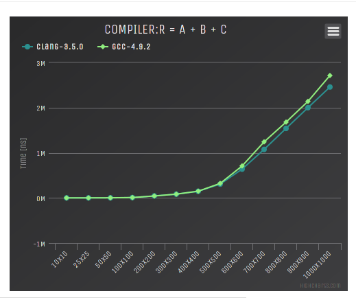
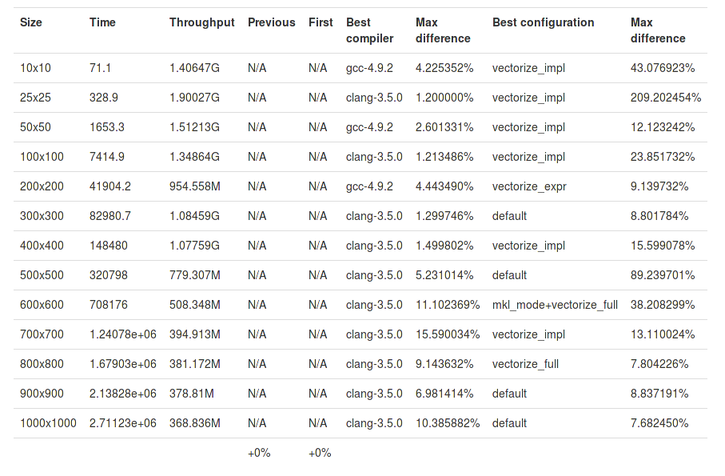
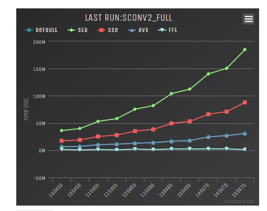
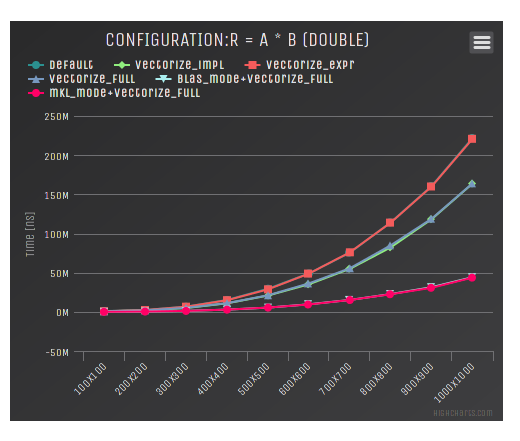

Continuous Performance Management with CPM for C++
For some time, I have wanted some tool to monitor the performance of some of my projects. There are plenty of tools for Continuous Integration and Sonar is really great for continuous monitoring of code quality, but I haven't found anything satisfying for monitoring performance of C++ code. So I decided to write my own. Continous Performance Monitor (CPM) is a simple C++ tool that helps you running benchmarks for your C++ programs and generate web reports based on the results. In this article, I will present this tool. CPM is especially made to benchmark several sub parts of libraries, but it perfectly be used to benchmark a whole program as well.
The idea is to couple it with a Continuous Integration tool (I use Jenkins for instance) and run the benchmarks for every new push in a repository. With that, you can check if you have performance regression for instance or simply see if your changes were really improving the performance as much as you thought.
It is made of two separate parts:
- A header-only library that you can use to benchmark your program and that will give you the performance results. It will also generate a JSON report of the collected data.
- A program that will generate a web version of the reports with analysis over time, over different compilers or over different configurations.
CPM is especially made to benchmark functions that takes input data and which runtime depends on the dimensions of the input data. For each benchmark, CPM will execute it with several different input sizes. There are different ways to define a benchmark:
- two_pass: The benchmark is made of two part, the initialization part is called once for each input size and then the benchmark part is repeated several times for the measure. This is the most general version.
- global: The benchmark will be run with different input sizes but uses global data that will be randomized before each measure
- simple: The benchmark will be run with different input sizes, data will not be randomized
- once: The benchmark will be run with no input size.
Note: The randomization of the data can be disabled.
You can run independent benchmarks or you can run sections of benchmarks. A section is used to compared different implementations of the same thing. For instance, I use them to compare different implementation of convolution or to see how ETL compete with other Expression Templates library.
Examples
I've uploaded three generated reports so that you can have look at some results:
Run benchmarks
There are two ways of running CPM. You can directly use the library to run the benchmarks or you can use the macro facilities to make it easier. I recommend to use the second way since it is easier and I'm gonna try to keep it stable while the library can change. If you want an example of using the library directly, you can take a look at this example. In this chapter, I'm gonna focus on the macro-way.
The library is available here, you can either include as a submodule of your projects or install it globally to have access to its headers.
The first thing to do is to include the CPM header:
#define CPM_BENCHMARK "Example Benchmarks" #include "cpm/cpm.hpp"
You have to name your benchmark. This will automatically creates a main and will run all the declared benchmark.
Define benchmarks
Benchmarks can be defined either in a CPM_BENCH functor or in the global scope with CPM_DIRECT_BENCH.
- simple
CPM_DIRECT_BENCH_SIMPLE("bench_name", [](std::size_t d){ std::this_thread::sleep_for((factor * d) * 2_ns ); })
The first argument is the name of the benchmark and the second argument is the function that will be benchmarked by the system, this function takes the input size as input.
- global
CPM_BENCH() { test a{3}; CPM_GLOBAL("bench_name", [&a](std::size_t d){ std::this_thread::sleep_for((factor * d * a.d) * 1_ns ); }, a); }
The first argument is the name of the benchmark, the second is the function being benchmarked and the following arguments must be references to global data that will be randomized by CPM.
- two_pass
CPM_DIRECT_BENCH_TWO_PASS("bench_name", [](std::size_t d){ return std::make_tuple(test{d}); }, [](std::size_t d, test& d2){ std::this_thread::sleep_for((factor * 3 * (d + d2.d)) * 1_ns ); } )
Again, the first argument is the name. The second argument is the initialization functor. This functor must returns a tuple with all the information that will be passed (unpacked) to the third argument (the benchmark functor). Everything that is being returned by the initialization functor will be randomized.
Select the input sizes
By default, CPM will invoke your benchmarks with values from 10 to 1000000, multiplying it by 10 each step. This can be tuned for each benchmark and section independently. Each benchmark macro has a _P suffix that allows you to set the size policy:
CPM_SIMPLE_P( VALUES_POLICY(1,2,3,4,5,6), "simple_a_n", [](std::size_t d){ std::this_thread::sleep_for((factor * d) * 1_ns ); });
You can also have several sizes (for multidimensional data structures or algorithms):
CPM_DIRECT_BENCH_TWO_PASS_P( NARY_POLICY(VALUES_POLICY(16, 16, 32, 32, 64, 64), VALUES_POLICY(4, 8, 8, 16, 16, 24)), "convmtx2", [](std::size_t d1, std::size_t d2){ return std::make_tuple(dmat(d1, d1), dmat((d1 + d2 - 1)*(d1 + d2 - 1), d2 * d2)); }, [](std::size_t /*d1*/, std::size_t d2, dmat& a, dmat& b){ b = etl::convmtx2(a, d2, d2); } )
Configure benchmarks
By default, each benchmark is run 10 times for warmup and then repeated 50 times, but you can define your own values:
#define CPM_WARMUP 3 #define CPM_REPEAT 10
This must be done before the inclusion of the header.
Define sections
Sections are simply a group of benchmarks, so instead of putting several benchmarks inside a CPM_BENCH, you can put them inside a CPM_SECTION. For instance:
CPM_SECTION("mmul") CPM_SIMPLE("std", [](std::size_t d){ std::this_thread::sleep_for((factor * d) * 9_ns ); }); CPM_SIMPLE("fast", [](std::size_t d){ std::this_thread::sleep_for((factor * (d / 3)) * 1_ns ); }); CPM_SIMPLE("common", [](std::size_t d){ std::this_thread::sleep_for((factor * (d / 2)) * 3_ns ); }); } CPM_SECTION("conv") CPM_TWO_PASS("std", [](std::size_t d){ return std::make_tuple(test{d}); }, [](std::size_t d, test& d2){ std::this_thread::sleep_for((factor * 5 * (d + d2.d)) * 1_ns ); } ); CPM_TWO_PASS("fast", [](std::size_t d){ return std::make_tuple(test{d}); }, [](std::size_t d, test& d2){ std::this_thread::sleep_for((factor * 3 * (d + d2.d)) * 1_ns ); } ); }
You can also set different warmup and repeat values for each section by using CPM_SECTION_O:
CPM_SECTION_O("fft",11,51) test a{3}; test b{5}; CPM_GLOBAL("std", [&a](std::size_t d){ std::this_thread::sleep_for((factor * d * (d % a.d)) * 1_ns ); }, a); CPM_GLOBAL("mkl", [&b](std::size_t d){ std::this_thread::sleep_for((factor * d * (d % b.d)) * 1_ns ); }, b); }
will be warmup 11 times and run 51 times.
The size policy can also be changed for the complete section (cannot be changed independently for benchmarks inside the section):
CPM_SECTION_P("mmul", NARY_POLICY(STD_STOP_POLICY, VALUES_POLICY(1,2,3,4,5,6), VALUES_POLICY(2,4,8,16,32,64))) test a{3}; test b{5}; CPM_GLOBAL("std", [&a](std::size_t d1,std::size_t d2, std::size_t d3){ /* Something */ }, a); CPM_GLOBAL("mkl", [&a](std::size_t d1,std::size_t d2, std::size_t d3){ /* Something */ }, a); CPM_GLOBAL("bla", [&a](std::size_t d1,std::size_t d2, std::size_t d3){ /* Something */ }, a); }
Run
Once your benchmarks and sections are defined, you can build you program as a normal C++ main and run it. You can pass several options:
./debug/bin/full -h Usage: ./debug/bin/full [OPTION...] -n, --name arg Benchmark name -t, --tag arg Tag name -c, --configuration arg Configuration -o, --output arg Output folder -h, --help Print help
The tag is used to distinguish between runs, I recommend that you use a SCM identifier for the tag. If you want to run your program with different configurations (compiler options for instance), you'll have to set the configuration with the --configuration option.
Here is a possible output:
Start CPM benchmarks Results will be automatically saved in /home/wichtounet/dev/cpm/results/10.cpm Each test is warmed-up 10 times Each test is repeated 50 times Time Sun Jun 14 15:33:51 2015 Tag: 10 Configuration: Compiler: clang-3.5.0 Operating System: Linux x86_64 3.16.5-gentoo simple_a(10) : mean: 52.5us (52.3us,52.7us) stddev: 675ns min: 48.5us max: 53.3us througput: 190KEs simple_a(100) : mean: 50.1us (48us,52.2us) stddev: 7.53us min: 7.61us max: 52.3us througput: 2MEs simple_a(1000) : mean: 52.7us (52.7us,52.7us) stddev: 48.7ns min: 52.7us max: 53us througput: 19MEs simple_a(10000) : mean: 62.6us (62.6us,62.7us) stddev: 124ns min: 62.6us max: 63.5us througput: 160MEs simple_a(100000) : mean: 161us (159us,162us) stddev: 5.41us min: 132us max: 163us througput: 622MEs simple_a(1000000) : mean: 1.16ms (1.16ms,1.17ms) stddev: 7.66us min: 1.15ms max: 1.18ms througput: 859MEs ----------------------------------------- | gemm | std | mkl | ----------------------------------------- | 10x10 | 51.7189us | 64.64ns | | 100x100 | 52.4336us | 63.42ns | | 1000x1000 | 56.0097us | 63.2ns | | 10000x10000 | 95.6123us | 63.52ns | | 100000x100000 | 493.795us | 63.48ns | | 1000000x1000000 | 4.46646ms | 63.8ns | -----------------------------------------
The program will give you for each benchmark, the mean duration (with confidence interval), the standard deviation of the samples, the min and max duration and an estimated throughput. The throughput is simply using the size and the mean duration. Each section is directly compared with an array-like output. Once the benchmark is run, a JSON report will be generated inside the output folder.
Continuous Monitoring
Once you have run the benchmark, you can use the CPM program to generate the web reports. It will generate:
- 1 performance graph for each benchmark and section
- 1 graph comparing the performances over time of your benchmark sections if you have run the benchmark several time
- 1 graph comparing different compiler if you have compiled your program with different compiler
- 1 graph comparing different configuration if you have run the benchmark with different configuration
- 1 table summary for each benchmark / section
First you have to build and install the CPM program (you can have a look at the Readme for more informations.
Several options are available:
Usage: cpm [OPTION...] results_folder --time-sizes Display multiple sizes in the time graphs -t, --theme arg Theme name [raw,bootstrap,boostrap-tabs] (default:bootstrap) -c, --hctheme theme_name Highcharts Theme name [std,dark_unica] (default:dark_unica) -o, --output output_folder Output folder (default:reports) --input arg Input results -s, --sort-by-tag Sort by tag instaed of time -p, --pages General several HTML pages (one per bench/section) -d, --disable-time Disable time graphs --disable-compiler Disable compiler graphs --disable-configuration Disable configuration graphs --disable-summary Disable summary table -h, --help Print help
There are 3 themes:
- bootstrap: The default theme, using Bootstrap to make a responsive interface.
- bootstrap-tabs: Similar to the bootstrap theme except that only is displayed at the same time for each benchmark, with tabs.
- raw : A very basic theme, only using Highcharts library for graphs. It is very minimalistic
For instance, here are how the reports are generated for the ETL benchmark:
cpm -p -s -t bootstrap -c dark_unica -o reports results
Here is the graph generated for the "R = A + B + C" benchmark and different compilers:
and its summary:
Here is the graph for a 2D convolution with ETL:
And the graph for different configurations of ETL and the dense matrix matrix multiplication:
Conclusion and Future Work
Although CPM is already working, there are several things that could be done to improve it further:
- The generated web report could benefit from a global summary.
- The throughput evaluation should be evaluated more carefully.
- The tool should automatically evaluate the number of times that each tests should be run to have a good result instead of global warmup and repeat constants.
- A better bootstrapping procedure should be used to determine the quality of the results and compute the confidence intervals.
- The performances of the website with lots of graphs should be improved.
- Make CPM more general-purpose to support larger needs.
Here it is, I have summed most of the features of the CPM Continuous Performance Analysis tool. I hope that it will be helpful to some of you as well.
If you have other ideas or want to contribute something to the project, you can directly open an issue or a pull request on Github. Or contact me via this site or Github.
Comments
Comments powered by Disqus